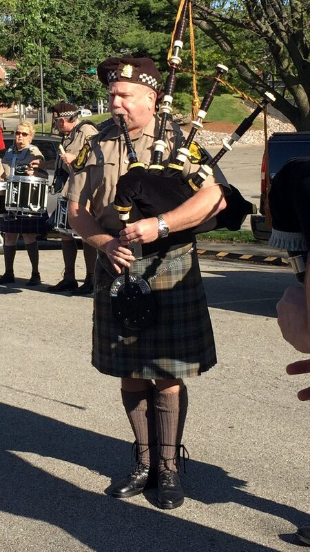

About
I'm a solo Scottish bagpiper based in Venice, Florida, available for weddings, funerals, memorials, ceremonies, and other events throughout Sarasota County and the surrounding southwest Florida area. After nearly three decades of piping — including service as Pipe Major of the Illinois State Police Pipes & Drums — I bring traditional Highland bagpipe music to occasions where the right tune at the right moment is everything.
- Pipe Major, Illinois State Police Pipes & Drums — 8+ years
- Piper, St. Andrew's Pipes and Drums — 20+ years
Whether you're planning a wedding processional, honoring a loved one at a graveside service, or marking a retirement, I'd be glad to discuss your event.
Available For
Weddings
Processional, recessional, cocktail hour, or full ceremony piping in traditional Scottish style.
Funerals & Memorials
Graveside services, church services, "Amazing Grace" tributes, and full ceremonial honors.
Military & Police Funerals
Full uniform honors for fallen officers and veterans, including formal procession and graveside salute.
Parades & Public Events
St. Patrick's Day, Memorial Day, Independence Day, and community celebrations.
Retirement & Award Ceremonies
Mark a milestone with traditional pipe music — entrance, recognition, or recessional.
Burns Suppers & Scottish Events
Piping in the haggis, addressing the company, and traditional Scottish ceremonial music.

Service Area
Available throughout Sarasota County and southwest Florida. Travel beyond this area can be arranged.
Book Kevin
Contact me for rates and availability. The earlier you reach out, the better — especially for weekend events and during wedding season.